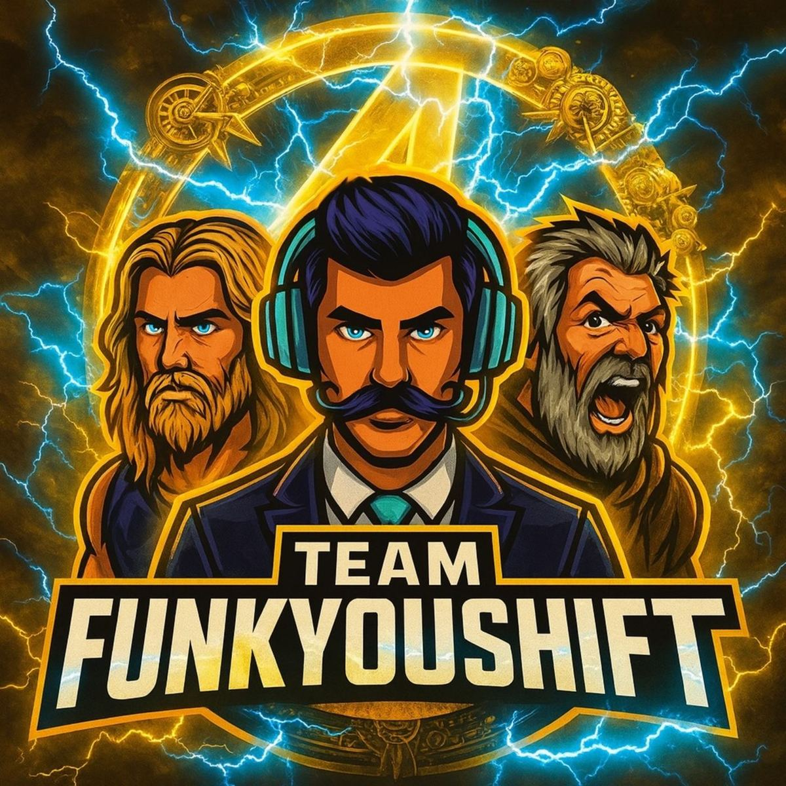

What do you need help with?
The Discord is the action step. These pages help you ask better questions when you get there.
Before you spend another night chasing one drop, join the server.
Ask for gear, find trades, get pointed to the right modded-item channels, or just hang out with people who are still deep in the loot grind.
Join the Discord
What to do after you join
Ask for the itemKnow what you need? Ask. Not sure what it is called? Start with the trading page.Find the right modding helpNew to modded gear? Start here so you do not wander into the wrong corner of the server.Check current giveawaysGiveaways move fast. Check the giveaway page, then keep an eye on Discord.
Quick answers
What is the FunkYouSHiFT Discord for?
The Discord is for Borderlands trading, modded gear talk, giveaways, co-op help, and hanging out with people who actually play.
Can new players join?
Yes. New players can ask questions. Nobody is born knowing where every weird item drops.
Does the Discord replace the website?
No. The website is the front door. Discord is where the community actually happens.
More Borderlands help
Modding, modded weapons, builds, and Discord help are connected so Google and real people can find the right page fast.
Borderlands Modding GuideStart here for BL3 and BL4 modding basics, tools, safe resources, and Discord help.
Modded Weapons & GearLearn how modded weapons work, what to ask for, and where to get help faster.
Borderlands BuildsBuild videos, community setup ideas, and help when your character needs more damage.
Borderlands DiscordJump into the community for trading, modded gear help, giveaways, and active players.